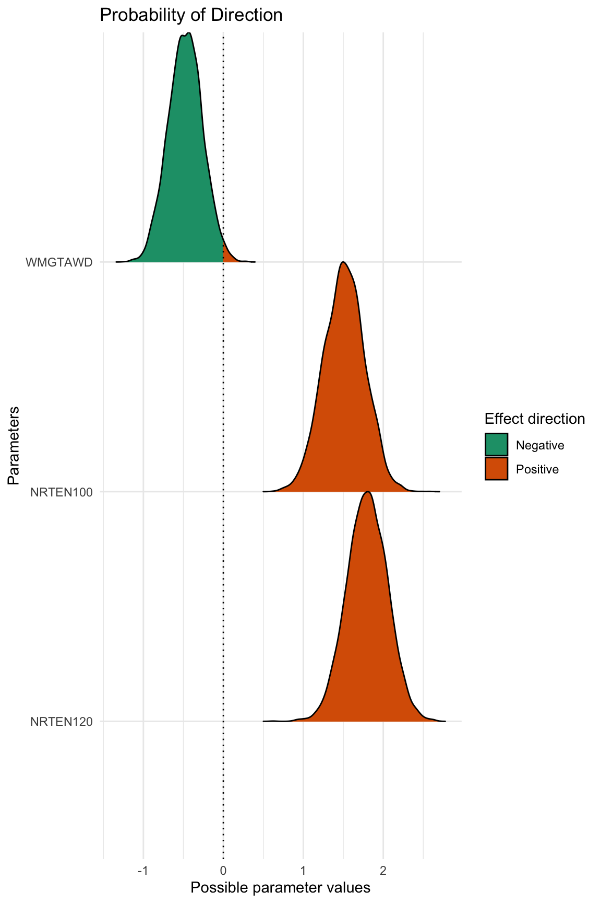
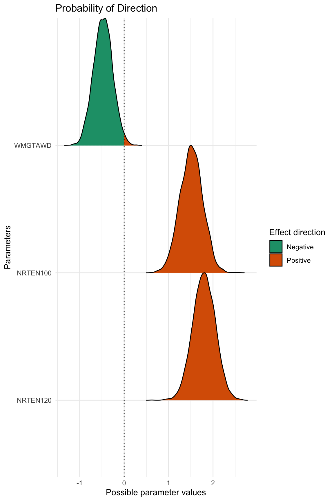

2015 Leaf Sheath Blight Severity Analysis
A. H. Sparks
2020-07-08
Source:vignettes/a06_2015_LshB_sev_analysis.Rmd
a06_2015_LshB_sev_analysis.RmdFor this analysis, I’ve elected to use MCMCglmm for a Bayesian analysis. When comparing the treatments in the analysis, the model compares each treatment to the base (control) treatment.
The base levels for this analysis are:
NRTE:60WMGT:PDL
Setup
Load libraries and set seed for reproducibility.
library("rice.awd.shb") library("MCMCglmm") set.seed(27)
The AUDPS object is loaded with the rice.awd.shb R package. To see how the AUDPS data were generated from the original raw data, see the vignette detailing the data processing file. However, because it is a tibble() and the treatments exist in a single column for graphing the raw data, this object needs a few minor changes to be usable for the analysis.
Create individual data frames for the analysis.
# create 2015 data frame AUDPS_2015 <- as.data.frame(AUDPS[AUDPS$YEAR == 2015,]) AUDPS_2015 <- droplevels(AUDPS_2015) # relevel factors for easier interpretation of analysis AUDPS_2015 <- within(AUDPS_2015, NRTE <- relevel(NRTE, ref = "N0")) AUDPS_2015 <- within(AUDPS_2015, WMGT <- relevel(WMGT, ref = "PDL"))
Leaf Sheath Blight Severity Model
Model Structure
Leaf sheath blight severity AUDPS, LShB_percent_AUDPS is the response variable. Water management, WMGT, and nitrogen rate, NRTE, are fixed effects. Replicate, REP, is treated as a random effect.
Diagnostics and Summary
plot(m3)

 

summary(m3)
##
## Iterations = 3001:59991
## Thinning interval = 10
## Sample size = 5700
##
## DIC: 385.5222
##
## G-structure: ~REP
##
## post.mean l-95% CI u-95% CI eff.samp
## REP 11.01 0.3602 35.76 2472
##
## R-structure: ~units
##
## post.mean l-95% CI u-95% CI eff.samp
## units 1.352 1.012 1.713 5700
##
## Location effects: LShB_percent_AUDPS ~ WMGT * NRTE
##
## post.mean l-95% CI u-95% CI eff.samp pMCMC
## (Intercept) 1.4021 -1.6154 4.7313 5700 0.24982
## WMGTAWD -0.8314 -1.5686 -0.1076 5700 0.02596 *
## NRTEN100 1.2284 0.5429 1.9648 5515 0.00175 **
## NRTEN120 1.5388 0.8369 2.2544 5379 < 2e-04 ***
## WMGTAWD:NRTEN100 0.5653 -0.4476 1.5895 5700 0.28386
## WMGTAWD:NRTEN120 0.5090 -0.5753 1.4340 5700 0.32807
## ---
## Signif. codes: 0 '***' 0.001 '**' 0.01 '*' 0.05 '.' 0.1 ' ' 1Save Model Information
Lastly, save the model information to be used in discussing the results.
saveRDS(m3, "../analysis/data/derived_data/LSev15.Rds", compress = "bzip2")